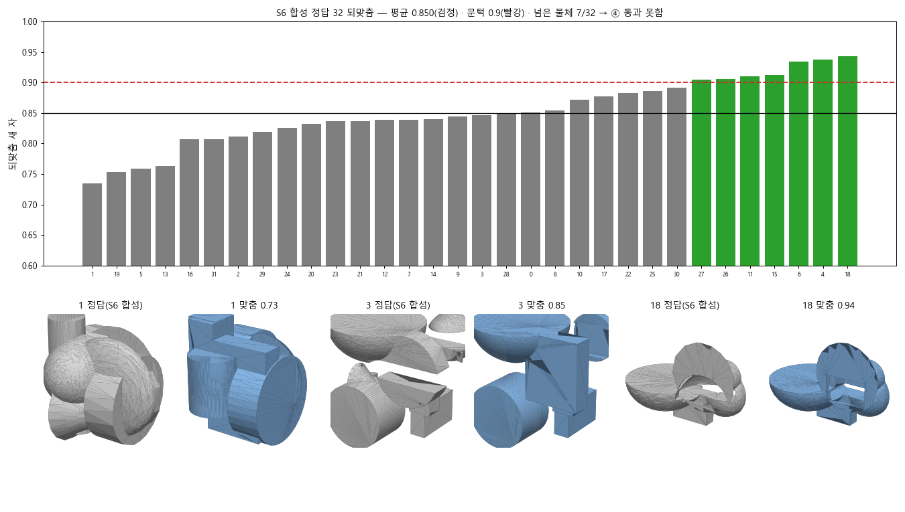

실험 m2_tr0313_h066_껍데기
목표 G1.2 view 모음 → 파츠별 CAD code(CadQuery · 그 전 「3 면도 → 파츠별 CAD」 · 지금 M2 는 위 · 앞 · 옆 고정 세 장만 받음 → 아무 각도 N 장으로 바꿀 것 · 11-20) · G1 첫 제품 — 피규어 · 메카 사진 여러 장 + 치수 → 숨은선 3 면도 + 파츠별 CAD · G0 임의의 이미지 → CAD 코드 · 빌린 가정 5: 정사영 · 시점앎 · 흰바탕 · 렌더화풍 · 정답3D · 갚는 계획: 진단 · 정답 만들기 — 껍데기를 그릴 어휘가 정해지면 그 어휘로 CAD code 정답 변환(m2 학습 · 비교는 그 뒤 카드) · 목표 시험지 값: 안 잼 (!)
바탕 맞춤(배관2 메시 · 출발 16 + 표면 F + R7 + R4 + R5 · 몸 12)에 몸마다 「뺌」(S6 · 파인 곳 씨앗 고침 포함)을 더하면 얇은 껍데기 물체의 CAD 정답이 좋아지나?
| 가설 | 주장 | 결과 | 근거 |
|---|---|---|---|
| m2-H66 | 어휘에 파낼 수단(뺌)이 없어 얇은 껍데기를 덩어리로 맞춘다 — 뺌을 더하면 껍데기 물체가 좋아진다 | 미검증 | 관문넷 ④ 통과 못함 → 카드대로 「자 못 믿음 · 안 돌림」 · S6 합성 정답 32 를 같은 배관(B2 코드 · ART_VOCAB=S6 ART_TRUTH=S6)으로 되맞춤 새 자 평균 0.8502 · 최소 0.7349(문턱 0.9) · 0.9 넘은 물체 7/32 · 하네스 실패 0 · CAD 안 끝남 0 · 조용한 실패 0 · 뺌 자리 찾은 수 26 / 정답 뺌 몸 93 · 남은 뺌 몸 평균 2.38 · 참고 옛 S6 ④(빼기309 · 출발 하나) 0.7426 · 2/93 · 본 판(실제 물체 32)은 안 돌림 → 껍데기차 · 나머지차 · 고주파차 없음 |
결정 표(돌리기 전에 정함)
- 만약 지지
다음 바탕 어휘를 S6 로 바꾸고 다음 카드로(H_a 두 단계는 S6 위에서) - 만약 기각
다음 뺌으로는 껍데기가 안 나아짐 — 남은 뺌 몸 수가 0 에 가까우면 맞춤이 뺌을 못 씀(맞춤 쪽) · 뺌을 쓰는데도 안 오르면 어휘 아닌 쪽(과녁 점 수 · 몸 수) - 만약 약함
다음 숫자 그대로 적고 사용자와 고름
분석
한 줄로
물음: 정답 변환 어휘에 몸마다 「뺌」(파내기)을 더하면 얇은 껍데기 물체의 CAD 정답이 좋아지나?
답: 아직 모른다. 본 판 전에 먼저 거치는 관문 ④에서 막혔다. 뺌 어휘로 직접 만든 합성 정답 32 개를 같은 맞춤으로 되찾게 했는데, 새 자 평균이 0.8502 였다. 문턱 0.9 에 못 미쳐, 카드대로 「자 못 믿음 · 안 돌림」으로 닫았다. 실제 물체 본 판은 돌리지 않았고, 가설 m2-H66 은 미검증으로 남는다.
왜 이 실험을 했나
tr312 에서 과녁 쪽 흔들기를 줄여 봤지만 고주파 칸은 오르지 않았다(기각). 남은 갈래는 표현 쪽이다. 지금 어휘에는 파낼 수단이 없어서, 속이 빈 헬멧 같은 껍데기를 덩어리로 맞춘다고 짐작했다. 그래서 몸마다 「뺌」 표시를 붙이고, 파인 곳에 뺌 몸을 미리 놓는 씨앗을 더했다. 목표는 임의의 메시를 CAD code 정답으로 바꾸는 변환이다.
바꾼 것 하나
어휘에 몸마다 「뺌」을 붙였다. 점유는 「더한 몸들 − 뺀 몸들」로, 코드는 더함.cut(뺌)으로 바뀐다. 파인 곳에는 씨앗 몸 넷을 놓는다. 나머지는 새 바탕(사용자 결정으로 jit · 일찍 버리기 · 유효 아님 지킴이 · R7 나란히를 들인 코드, 새 자 0.7101)과 같다.
관문 ④는 이 바꿈이 「자기 어휘로 만든 정답」을 되찾을 수 있는지 먼저 본다. 되찾지 못하면, 실제 물체에서 나온 차이를 껍데기 탓으로 읽을 수 없기 때문이다.
결과

위 막대에서 초록(0.9 넘음)이 일곱 개뿐인 것을 보자. 아래 줄은 가장 낮은 물체 1, 가운데 3, 가장 높은 18 의 정답(회색)과 맞춤(파랑)이다.
| 이 실험(④) | 문턱 | 넘었나 | |
|---|---|---|---|
| 되맞춤 새 자 평균 | 0.8502 | 0.9 | 아니오 |
| 0.9 넘은 물체 | 7/32 | — | — |
| 가장 낮은 물체 | 0.7349 | — | — |
| 하네스 실패 | 0 | 0 | 예 |
새 자는 정답 메시와 맞춘 메시의 표면이 0.02 안에서 얼마나 겹치는지를 0 ~ 1 로 잰 점수다.
왜 이렇게 나왔나
확인한 것
- 정답에 든 뺌 몸 93 개 가운데 맞춤이 제자리를 찾은 것은 26 개다. 남은 뺌 몸은 물체당 평균 2.38 개다.
- 같은 관문을 옛 S6(출발 하나)로 돌렸을 때는 0.7426, 뺌 자리 2/93 이었다. 출발 16 과 씨앗 덕에 올랐지만 0.9 에는 못 미친다.
- 하네스 실패 · CAD 안 끝남 · 조용한 실패는 모두 0 이다. 점수가 낮은 까닭은 실행 실패가 아니라 모양이다.
짐작 (아직 확인 안 함)
- 물체 1 그림에서는 정답의 파인 곳을 맞춤이 덩어리 상자로 메웠다. 막힌 곳은 어휘가 아니라 뺌 몸을 찾아 놓는 맞춤 쪽으로 보인다.
- 일찍 버리기가 뺌 몸을 늦게 찾는 출발을 먼저 버렸을 수도 있다. 버리기 없이 돌린 ④ 는 없어서 가를 수 없다.
한계
- 합성 정답 32 개, 한 번만 돌렸다.
- 본 판을 안 돌려서 껍데기 무리 차 · 나머지 차 · 고주파 차는 없다. 껍데기 가설에 대해서는 아무것도 말할 수 없다.
- 이 판은 사용자 결정으로 들인 B2(일찍 버리기) 코드로 돌았다. B2 는 실제 물체에서 바탕보다 새 자가 0.02 낮았다.
배운 것과 다음
뺌 어휘는 넣었지만, 맞춤이 뺌 몸을 찾지 못해 자를 믿을 수 없다.
- 다음 카드는 뺌 몸 찾기(맞춤) 쪽이다. ④ 를 0.9 넘게 만드는 것이 먼저다.
- 일찍 버리기가 ④ 를 깎는지는 버리기 없는 ④ 한 판으로 가를 수 있다(필요할 때만).
- ④ 를 넘으면 같은 카드로 본 판(실제 32)을 돌려 H66 을 잰다.